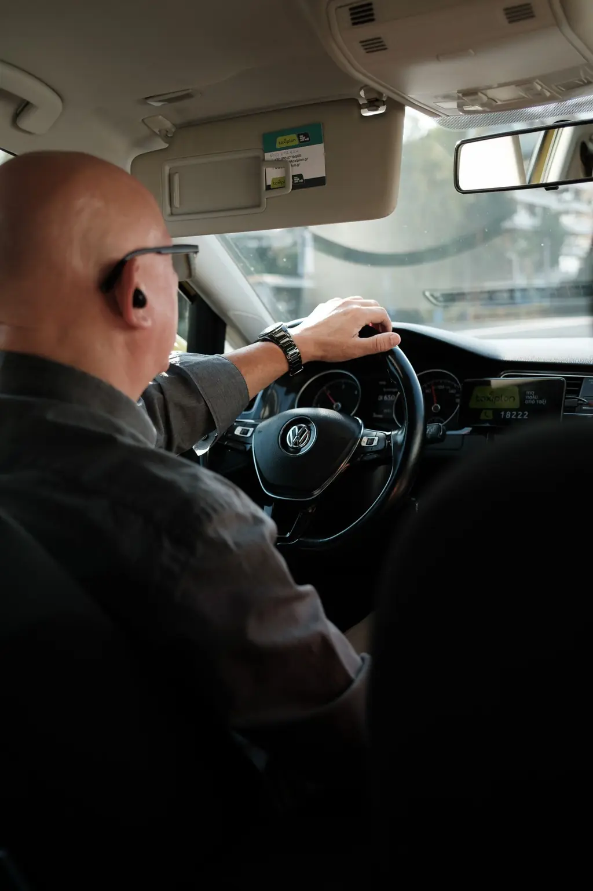

Transport médical conventionné
Consultations, examens, hospitalisations : sur prescription, avec tiers payant le plus souvent.
Vos rendez-vous médicaux, sans avancer les frais ni chercher à vous garer.
Taxis conventionnés par l'Assurance maladie : avec une prescription médicale de transport, vous n'avancez rien dans la plupart des cas. Le même chauffeur pour vos séances régulières, et toutes vos courses à Bordeaux depuis 1947.
Pensez à votre prescription de transport et à votre carte Vitale.

Cliquez sur votre trajet : le formulaire de réservation se remplit tout seul.
Nos trajets
Consultations, examens, hospitalisations : sur prescription, avec tiers payant le plus souvent.
Dialyse, chimiothérapie, radiothérapie, rééducation : un chauffeur attitré, des horaires fixes.
CHU Pellegrin, Haut-Lévêque, Saint-André, cliniques : dépose au plus près du service.
Saint-Jean et Mérignac, réservation conseillée la veille.
Au compteur, avec paiement par carte à bord.
Aide à la montée, fauteuil pliant transporté, patience garantie.
Comment ça se passe
Par téléphone ou formulaire, avec la date et l'adresse du rendez-vous.
Prescription médicale de transport, carte Vitale, et justificatif de mutuelle si vous en avez.
À l'heure, avec aide pour monter en voiture si besoin.
Nous nous occupons de la facturation à l'Assurance maladie dans la plupart des cas.
Trajets récents
Talence → CHU Pellegrin
Bordeaux Caudéran → Clinique
Le Bouscat → Gare Saint-Jean
Nos engagements
Jean-Marc Dubreuil, gérant, troisième génération
« Pour mes séances de dialyse, c'est toujours Marc qui vient. Ponctuel, attentionné, et je n'avance jamais rien. »
« Taxi réservé à 5 h pour la gare, chauffeur là à 4 h 55. Comme d'habitude avec eux. »
Questions fréquentes
Votre question n'est pas là ?
Appelez-nous au 05 36 49 33 10.
Un taxi qui a signé une convention avec l'Assurance maladie pour transporter des patients sur prescription médicale. Le transport peut alors être pris en charge, souvent sans avance de frais grâce au tiers payant.
La prescription médicale de transport remplie par votre médecin, votre carte Vitale, et votre attestation de mutuelle ou de prise en charge à 100 % si vous en avez une.
Cela dépend de votre situation : affection de longue durée, hospitalisation, accident du travail, etc. Nous vous indiquons avant le trajet ce qui reste éventuellement à votre charge.
Oui, nous organisons un chauffeur attitré autant que possible pour les séances régulières.
Nous transportons les fauteuils pliants et aidons à la montée. Pour un transport en fauteuil non pliant, il faut un véhicule adapté que nous pouvons vous indiquer.
Oui, en ville, vers la gare et l'aéroport, 24 h/24, avec paiement par carte à bord.
Réservation
Indiquez le trajet et l'heure du rendez-vous. On vous rappelle pour confirmer et vérifier la prise en charge.
24 h/24, 7 j/7
5 cours de la Somme, 33000 Bordeaux
Nous intervenons à Bordeaux, Mérignac, Pessac, Talence, Bègles, Le Bouscat, Cenon, Lormont, CHU Pellegrin, Aéroport de Bordeaux-Mérignac.